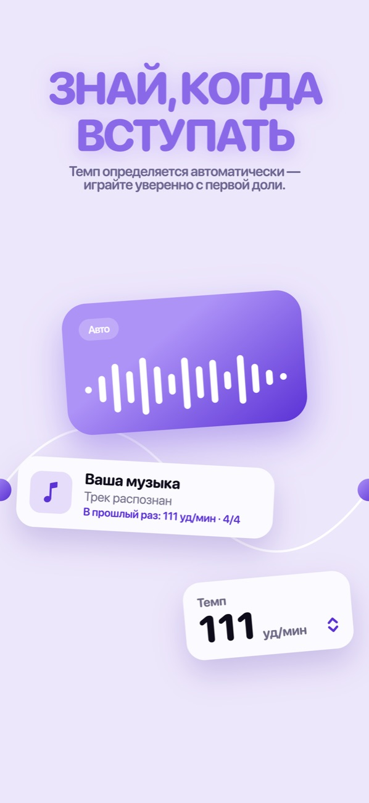
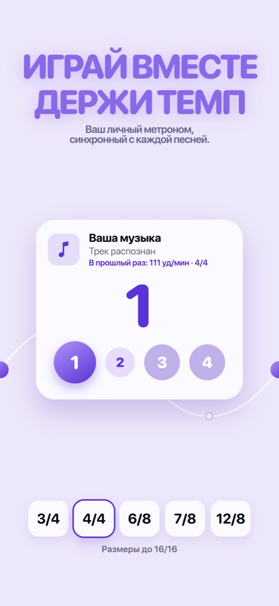
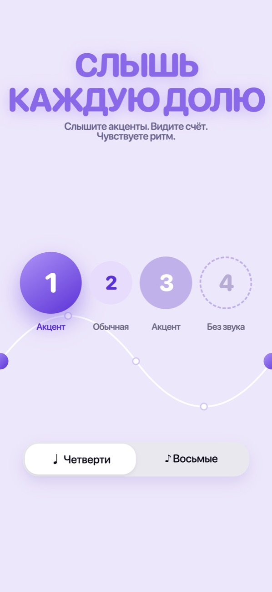

Как это работает
Включи музыку
Из колонки, от группы или из другого приложения.
Дай послушать
Примерно через 6–10 секунд темп, размер и первая доля определены. Уже знакомые приложению песни узнаются примерно за 5 секунд, даже без интернета.
Играй вместе
Метроном щёлкает в такт, первая доля выше и громче. При желании — восьмыми.
Держится за музыку, пока она звучит.
Фиксированный темп
После захвата темп и первая доля остаются на месте. Игра, пение или хлопки не сбивают метроном.
Свободный темп
Для старых и концертных записей с плавающим темпом. Метроном следует за музыкой.
Узнавание без сети
Знакомые песни в следующий раз сразу стартуют с верной долей, даже при плавающем темпе.
Пауза и вступление
На паузе метроном молчит, но продолжает следить за музыкой. Вступление возвращает его точно в такт.
Для наушников
Опережение щелчка против задержки Bluetooth. Щелчки можно вывести через динамик iPhone.
Вручную
Обычный метроном: 30–300 BPM, размеры до 16/16 и тап-темп. Работает и без микрофона.
Знай, когда вступать.
Акцент на первой доле, четверти или восьмые. Каждую долю можно акцентировать, оставить обычной или заглушить.



Без аккаунта. Без рекламы. Без отслеживания.
Читать политику конфиденциальности- Микрофон
- Звук анализируется на устройстве. Записи не сохраняются и не отправляются.
- Распознавание песен
- В Shazam (Apple) отправляется аудиоотпечаток, а не звук.
- Данные о темпе
- Для распознанной песни в GetSongBPM отправляются название и исполнитель.
Поддержка AutoMetronom
Кратко опиши вопрос. Мы ответим как можно скорее и используем твои данные только для обработки обращения.
Чтобы мы могли помочь: укажи устройство, версию iOS, версию приложения, звучавшую песню и краткое описание. Снимок экрана часто помогает.
Правовые тексты
Выбери регион, в котором ты пользуешься AutoMetronom.
- ШвейцарияПолитика конфиденциальностиУсловия использованияАвторские права
- Европейский союз и ЕЭЗПолитика конфиденциальностиУсловия использованияАвторские права
- СШАПолитика конфиденциальностиУсловия использованияАвторские права
- Материковый КитайПолитика конфиденциальностиУсловия использованияАвторские права
- Другие регионыПолитика конфиденциальностиУсловия использованияАвторские права